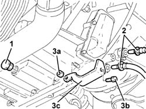
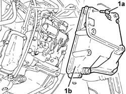

2130B36 automatic tranmission valve cover r r
- Path
- Procedures > 21 GEARBOX > 2130 AUTOMATIC TRANSMISSION AND DIFFERENTIAL > 2130B automatic transmission components > 2130B36 automatic tranmission valve cover r r
- Kind
- repair procedure (removal / refitting; the operation number is the code)
- Applies to
- engines: 2.5 V6; all production periods
- Interactive page
- https://sloeber94.github.io/elrnDB-a156/en/#/3237995
Applies to: engines: 2.5 V6; all production periods; only with equipment: Automatic transmission
 Removing
Removing
 Refitting
RefittingPosition the vehicle on the ramp.
Place the gear selector lever in 1 st manual speed.
5530B52 Battery DRIP TRAY/SUPPORT - R.R. .
1048A34 sleeve(s) from flow meter to air supply capacity case - r + r .
1048A10 air cleaner filtering element - replace .
1. Undo the drain plug and drain the gearbox oil.
2. Disconnect the quick-release fittings of the delivery and return pipes to the gearbox oil cooling radiator.
3. Undo the nut (3a) and the bolt (3b) and remove the automatic transmission fluid temperature sensor protective bracket (3c).

Applies to: engines: 2.5 V6; all production periods; only with equipment: Automatic transmission
1. Undo the bolts (1a) and remove the automatic transmission solenoid valve cover (1b).

Applies to: engines: 2.5 V6; all production periods; only with equipment: Automatic transmission
Refitting
RemovingClean any residues of sealant from the automatic transmission solenoid valve cover contact surfaces.
Apply a bead of silicon sealant 1.0 - 1.5 mm thick along the edge of the solenoid valve unit cover, removing any excess from inside the cover.
Refit in its seating the gear selection solenoids assembly cover and tighten the bolts to the specified torque.
 | Fastening | Component | Ø | Value (daNm) |
|---|---|---|---|---|
- | Bolt | SOLENOID VALVES COVER | - | 2.0 - 2.7 |
Refit the automatic transmission fluid temperature sensor bracket in its seating and secure with the nut and bolt.
Connect the quick-release connectors on the supply and return pipes to the gearbox oil cooling radiator.
Tighten the gearbox oil drain plug to the specified torque.
| Fastening | Component | Ø | Value (daNm) |
|---|---|---|---|---|
- | - | AUTO TRANSMISSION PLUGS | - | 2.3 - 5.5 |
1048A10 air cleaner filtering element - replace .
1048A34 sleeve(s) from flow meter to air supply capacity case - r + r .
5530B52 Battery DRIP TRAY/SUPPORT - R.R. .
2130A04 Automatic transmission FLUID - Check level and top up, .if necessary .